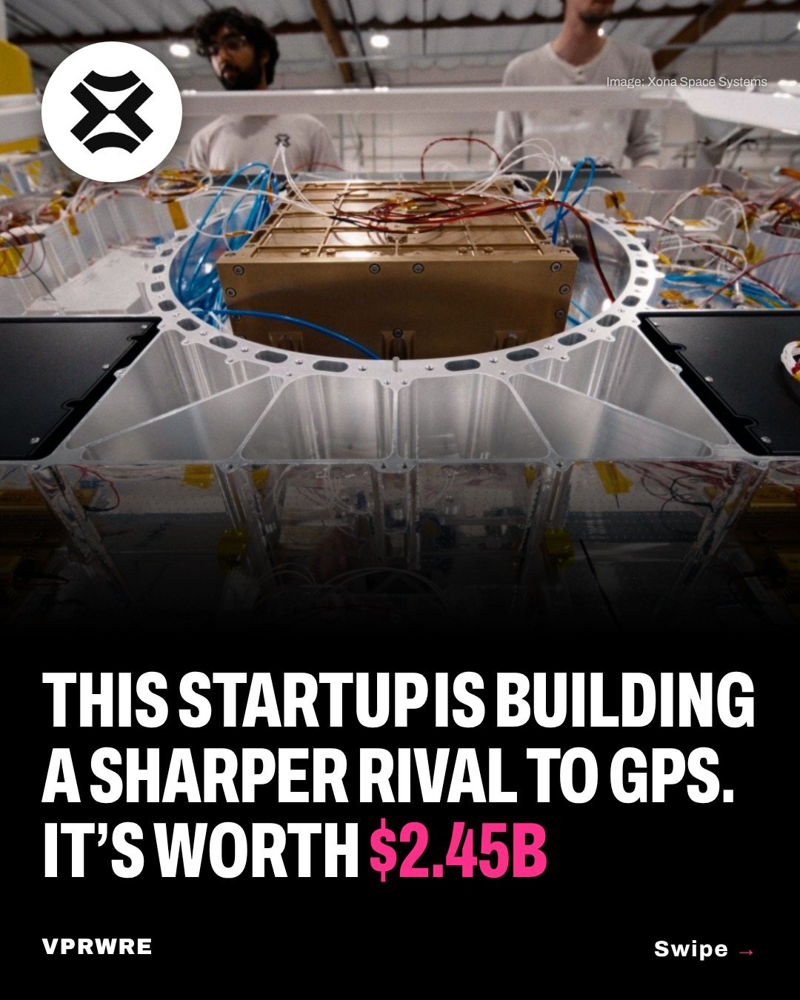

Funding
This startup is building a sharper rival to GPS. It’s worth $2.45B.
This startup is building a sharper rival to GPS. It’s worth $2.45B.

Xona Space Systems raised a $250 million Series D led by Steve Jurvetson’s Future Ventures, at a $2.45 billion valuation, bringing its total funding to more than $570 million. Jurvetson was an early Xona backer and previously backed SpaceX and Planet.
Founded in 2019, Xona is building Pulsar, a satellite navigation system in low Earth orbit. It says Pulsar has demonstrated positioning accuracy better than two centimeters, performs better where traditional satellite navigation struggles, and works with existing commercial receivers after an upgrade, without physical changes. Xona launched six more Pulsar satellites this week, and four of them are set to start serving customers in 2027. The other two are the first satellites built entirely in-house at its factory in Burlingame, California. It has FCC authorization for its commercial navigation constellation.
“The goal shouldn’t be to replicate what GPS does today, but to enable what comes next,” said co-founder and CEO Brian Manning.
Images: Xona Space Systems
The carousel
4 slides · Open on Instagram
Disclosure: VPRWRE drafts with Claude, Anthropic’s AI.